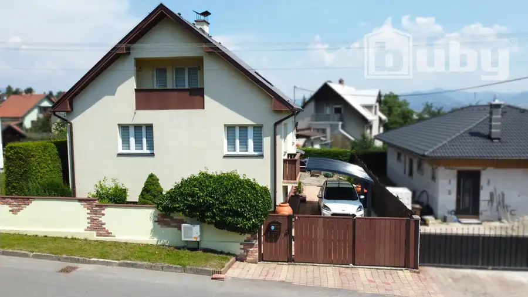
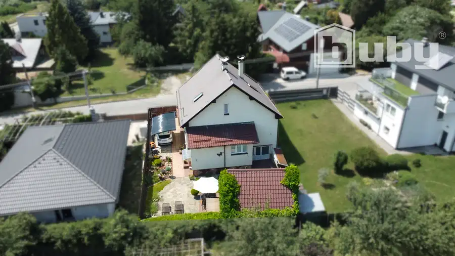
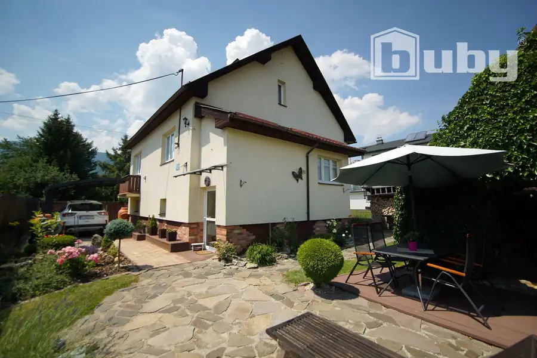
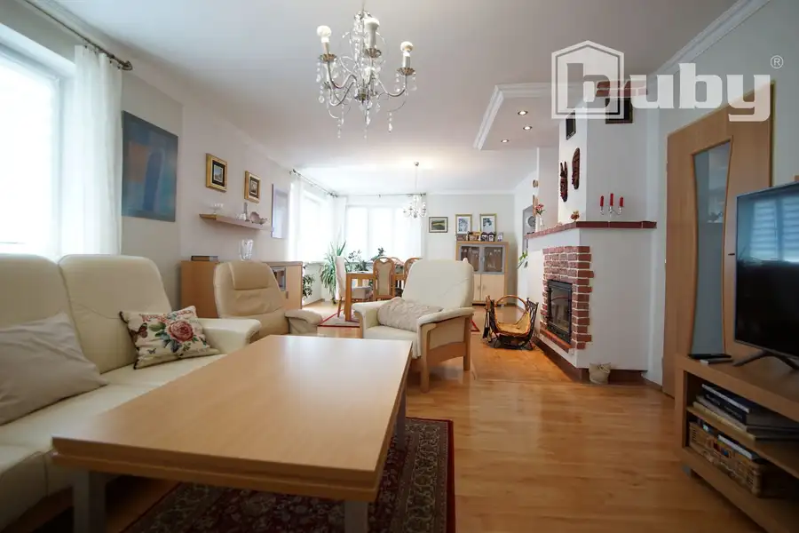
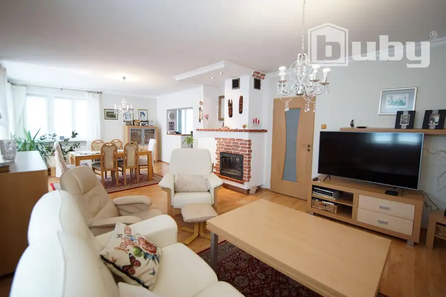
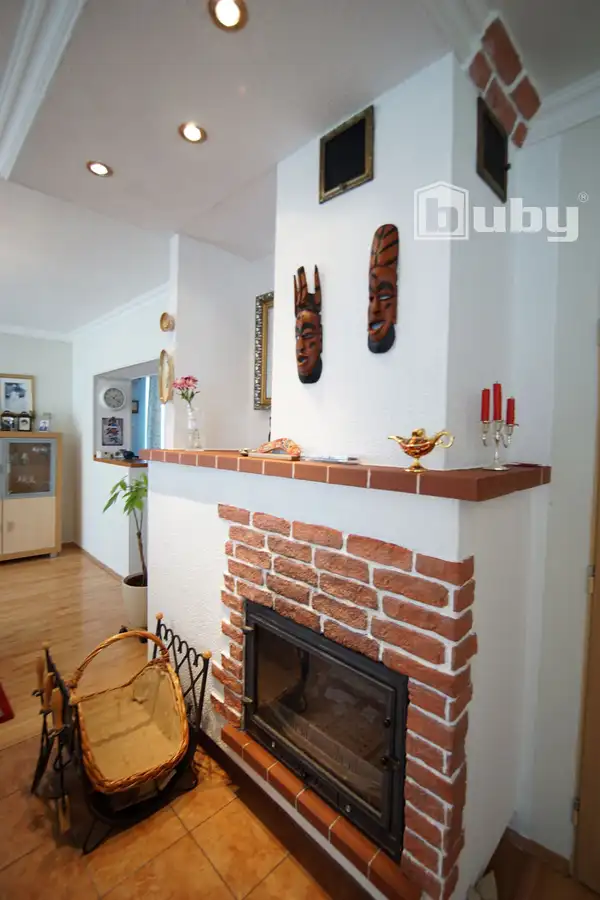
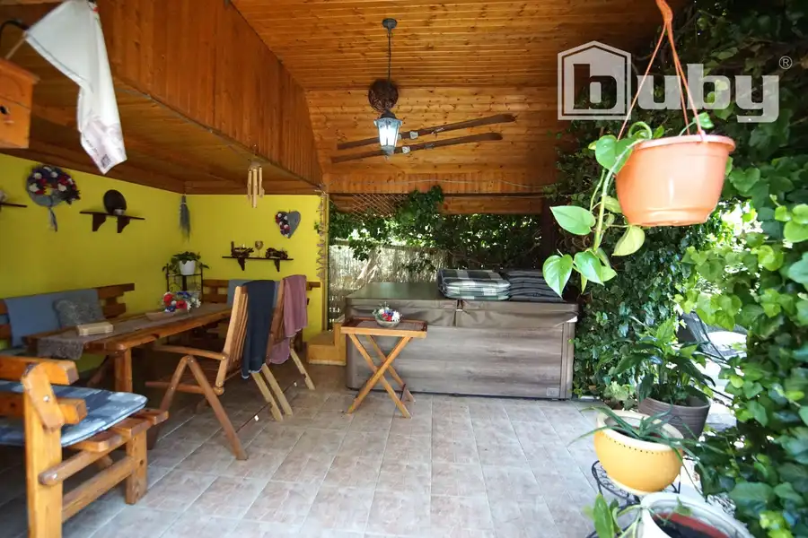
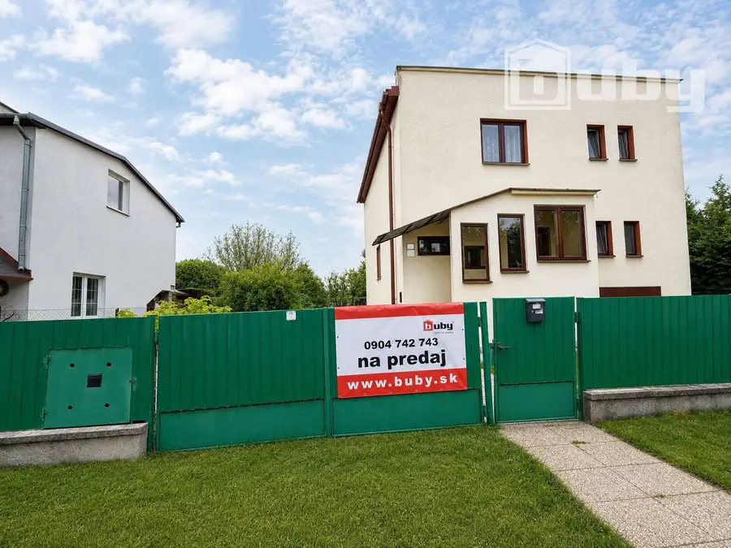
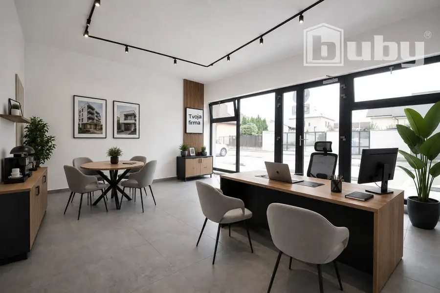

Predám rodinný dom v Martine, na Stráňach.
Martin







- Plocha367 m²
- StavKompletná rekonštrukcia
- VlastníctvoOsobné
O nehnuteľnosti
Na predaj ponúkam útulný poschodový rodinný dom vo vyhľadávanej lokalite Martin - Stráne. Jedná sa o rodinný dom po kompletnej rekonštrukcii, postavený na rovinatom pozemku o celkovej výmere 376 m2. Video si môžete pozrieť tu : https://www.youtube.com/shorts/IB4dlF7lnqcNa prízemí sa nachádza samostatná bytová jednotka, ideálna pre rodičov, hostí alebo podnikanie (obývacia izba, kuchyňa so špajzou, práčovňa s toaletou, sauna, sprcha)Na prvom podlaží sa nachádza priestranná obývacia izba s jedálňou, kuchyňa, kúpeľňa so sprchovacím kútom a toaletou a schodisko. Na druhom podlaží sa nachádza spálňa s balkónom a šatníkom, destká izba a obývačka. Na pozemku sa nachádza prístrešok na jedno auto, garáž a altánok s vírivkou. Hoci pozemok svojou výmerou nepatrí medzi rozsiahle, je veľmi praktický a príjemne využitý.Ponúka dostatok priestoru na relax, opaľovanie, grilovanie, či posedenie s rodinou a priateľmi.Altánok s vírivkou vytvára súkromnú oázu oddychu a spolu s fínskou saunou ponúka ideálne miesto na relaxáciu počas celého roka.Kúrenie v dome je plynové (nový kotol kúpený 12/2025), napojený na všetky IS: voda, kanalizácia, elektrina, plyn. Cena domu 359 000 €.Pre viac informácií ma kontaktujte na 0904 742 743, mail : valusek.m@bubyreality.sk
Parametre
- Druh
- Rodinný dom
- Dátum zverejnenia
- 05. 10. 2026
- Orientácia
- Juhozápadná
- Plocha pozemku
- 366 m²
- Počet izieb / miestností
- 5
- Stav nehnuteľnosti
- Kompletná rekonštrukcia
- Terén pozemku
- Rovinatý
- Typ
- Predaj
- Typ konštrukcie
- Tehlová
- Vlastníctvo
- Osobné
- Vybavenie
- Balkón, Garáž, Pivnica
- Vykurovanie
- Ústredné, Krb
- Zariadenie
- Čiastočne zariadené
- Zastavaná plocha
- 90 m²
- Úžitková plocha
- 367 m²
Kde to je


Mohlo by Vás zaujímať

DomNové 220 000 €Rodinný dom v Kláštore pod Znievom na predaj, pozemok 770 m2. Martin 769 m²
Komerčné priestoryNové Cena na vyžádáníNa prenájom 2 izbový byt / apartmán / nebytový priestor, v novostavbe Martin. Martin 39 m² Komerčné priestoryNové Cena na vyžádáníVýrobno skladovacie priestory na prenájom, od 2000 m2, Martin. Martin 2000 m²